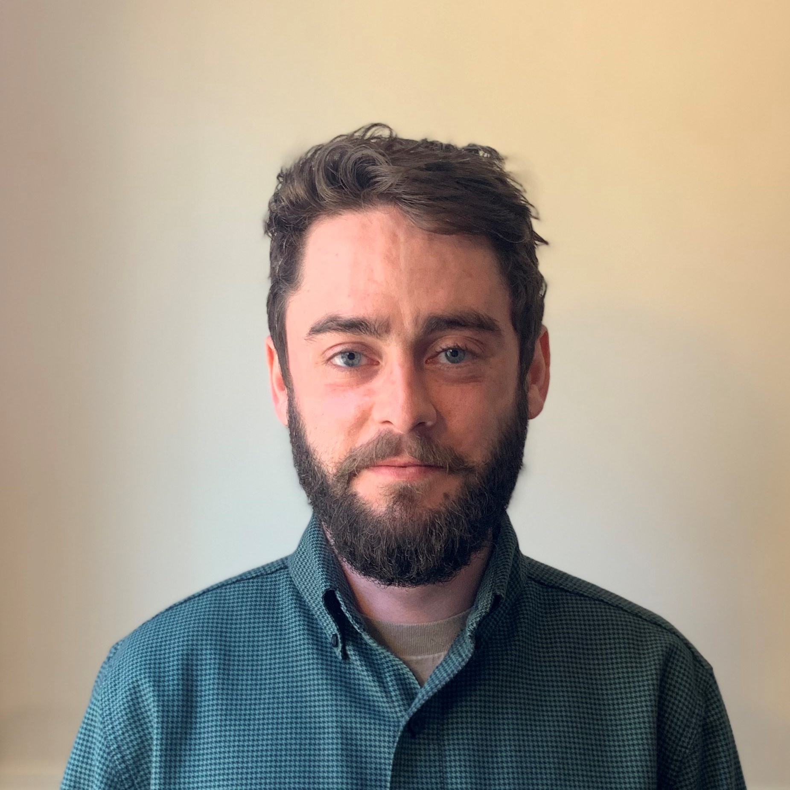
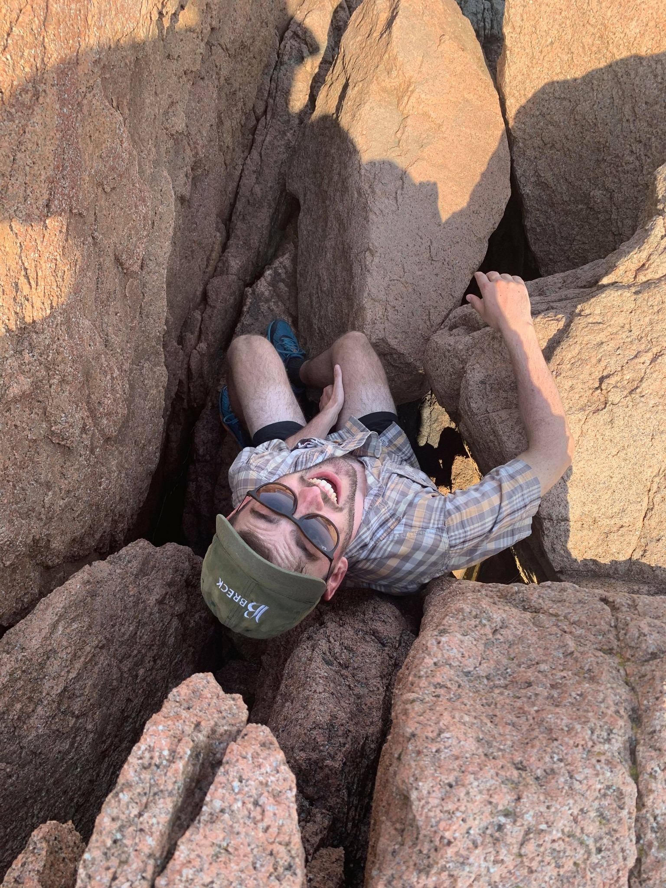

 
My name is Craig Brinkerhoff and I am a PhD candidate in the Fluvial@UMass group in Civil & Environmental Engineering at the University of Massachusetts, Amherst. I’m a ‘computational hydro-geomorphologist’ interested in large-to-global scale modeling and remote sensing of rivers and (more broadly) drainage networks. My ultimate goal is to explore the downstream impacts of the landscape, rivers, and people.
In practice, I use and develop scalable geomorphic theory within high-performance computational and remote sensing frameworks to better understand the downstream transport of water, nutrients, and other constituents. A unique component of my work is leveraging the long and rich tradition of field-scale fluvial geomorphology, hydraulics, and hydrology within large computing projects.